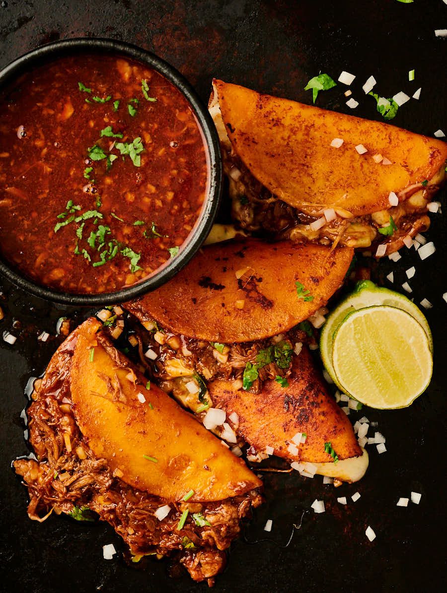

Tacos

Birra tacos
There's nothing quite like birra tacos. They're so simple, yet so life changing.
Read on and find out how to make them.
Ingredients
- Tortillas
- Meat
- Cheese
- Consume
- Limes
Steps
- Prepare consume in slow cooker
- Place meat in slow cooker and let cook
- Put finished meat on tortilla, sprinke cheese, and fry them up
- Dish up and enjoy those tacos